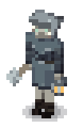
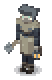
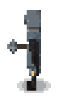
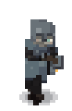

Bound Standard-Bearer
Bound Standard-Bearer is an elite of Marrowfield (level 37).
Bound Standard-Bearer is an elite of Marrowfield (level 37).
In the game
In the game the Bound Standard-Bearer is level 37, elite (a group's fight). It is undead. It is found in The Marrow Citadel. It can drop Standard-Bearer's Mace (always), Picket Pauldrons (25%) and Veteran's Hauberk (25%).
Quests
Quests that ask for it: The Standard-Bearer (behind the level cap).
Gallery







